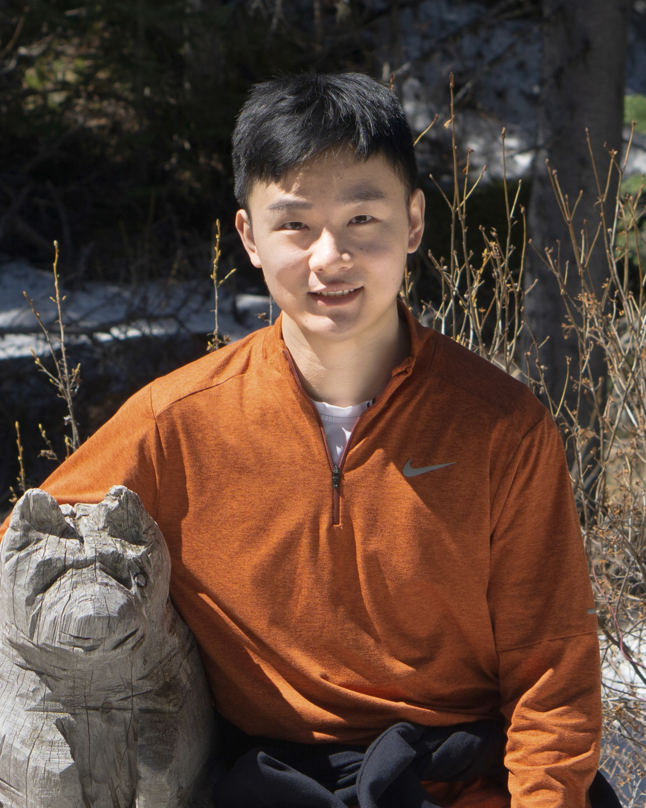

|  |
Baotong LuPh.D. Student |
I'm a Ph.D. candidate at the Department of Computer Science and Engineering, The Chinese University of Hong Kong (advisor: Prof. Eric Lo). I am also a visiting Ph.D. student at the Data Science Research Group, Simon Fraser University (host advisor: Prof. Tianzheng Wang). I earned my bachelor's degree with Outstanding Graduate Award from Shandong University in 2018. I worked at Microsoft Research Asia Lab as a visiting fellow in 2022 summer.
My research interest lies in database management system, specifically next-generation database system on modern hardware and cloud infrastructure. I am a recipient of 2021 ACM SIGMOD Research Highlight Award.
I am on the job market for 2023 fall intake. If you have any openings related to database system, I would love to get in contact!
Are Updatable Learned
Indexes Ready?
Chaichon Wongkham, Baotong Lu, Chris Liu, Zhicong Zhong, Eric Lo, Tianzheng
Wang
48th International Conference on Very Large Data Bases (VLDB 2022).
APEX: A High-Performance Learned Index
on Persistent Memory.
Baotong Lu, Jialin Ding, Eric Lo, Umar Faroop Minhas, Tianzheng Wang
48th International Conference on Very Large Data Bases (VLDB 2022).
Scaling Dynamic Hash Tables on Real Persistent Memory. [Technical Perspective] from Prof. Ken Ross
Baotong Lu, Xiangpeng Hao, Tianzheng Wang, Eric Lo
SIGMOD Record 2021, Volume 50, Issue 1.
Dash: Scalable Hashing on
Perisistent Memory. [code] [Abstract at NVMW 2021]
Baotong Lu, Xiangpeng Hao, Tianzheng Wang,
Eric Lo
46th International Conference on Very Large Data Bases (VLDB 2020).
2021 ACM SIGMOD Research Highlight Award
DragonflyDB's (a modern, fast Redis replacement)
core hash table structure is based on Dash.
High Performance Depthwise and
Pointwise Convolutions on Mobile Devices.
Pengfei Zhang, Eric Lo, Baotong Lu
34th
AAAI conference on Artificial Intelligence (AAAI 2020).
SIGMOD Availability Committee 2023, 2022
Reviewer: TKDE, TCAD
External Reviewer: SIGMOD 2022, ICDE 2022, VLDB 2021, SIGMOD 2021, ICDE 2021, EDBT 2021, ATC 2020, DASFAA 2019, VLDB 2018 (Demo)
Spring 2021, CSCI5570: Large Scale Data Processing Systems
Fall 2020, CENG4480: Embedded System Development and Applications
Fall 2019, CSCI4160: Distributed and Parallel Computing
Spring 2019, ESTR3102: Operating Systems (Elite Stream)
Fall 2018, CSCI3150: Operating Systems
| ACM SIGMOD Research Highlight Award | 2021 |
| Mitacs Globalink Research Award | 2022 |
| China National Scholarship | 2015, 2017 |